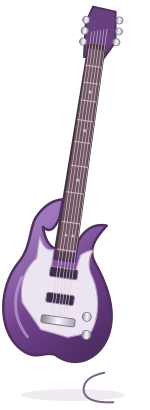

electricThe louder side of me
I love rock music, so of course I was going to end up playing electric guitar. There's something ridiculously satisfying about a good riff, especially when you finally get a part right after playing it over and over. Sometimes I want something loud, energetic, and a little dramatic.
- Rock & metal
- Riffs
- Distortion
- Favorite pastime
Sometimes I just want to play something loud.